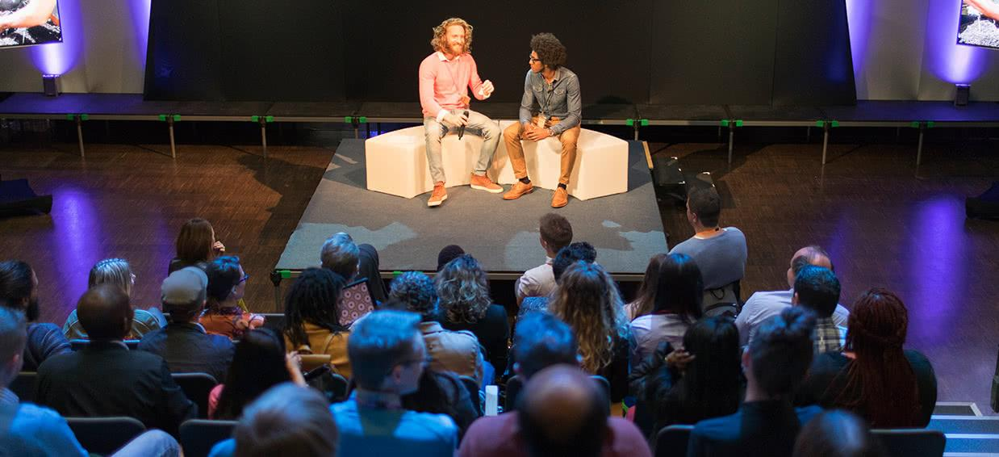
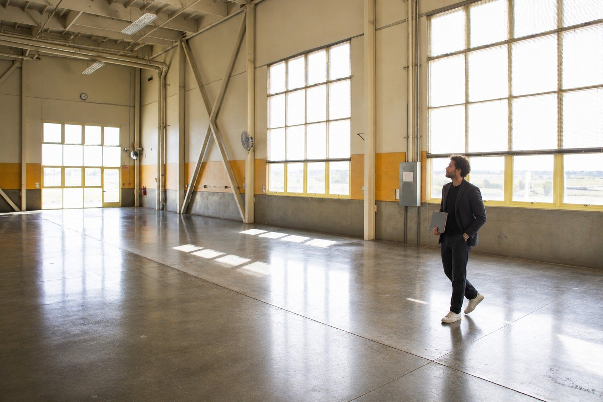
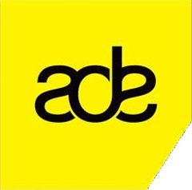
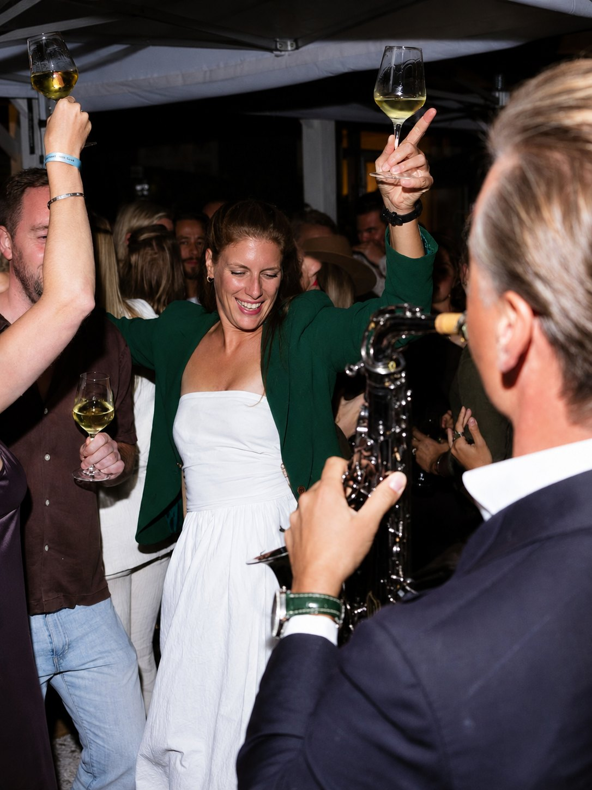
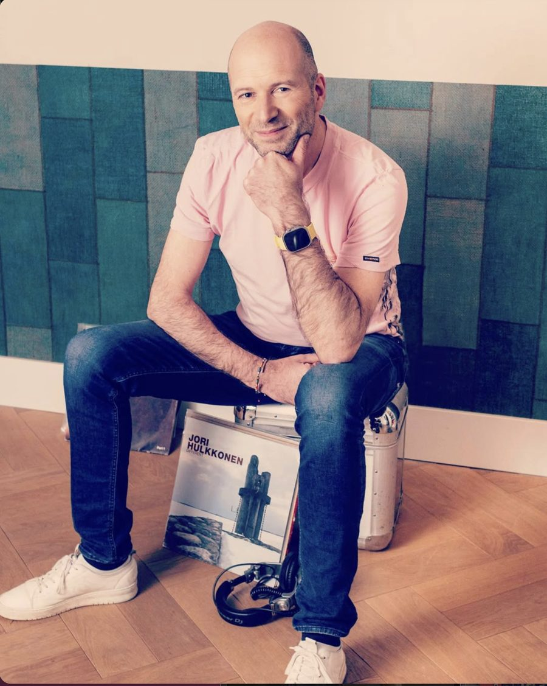
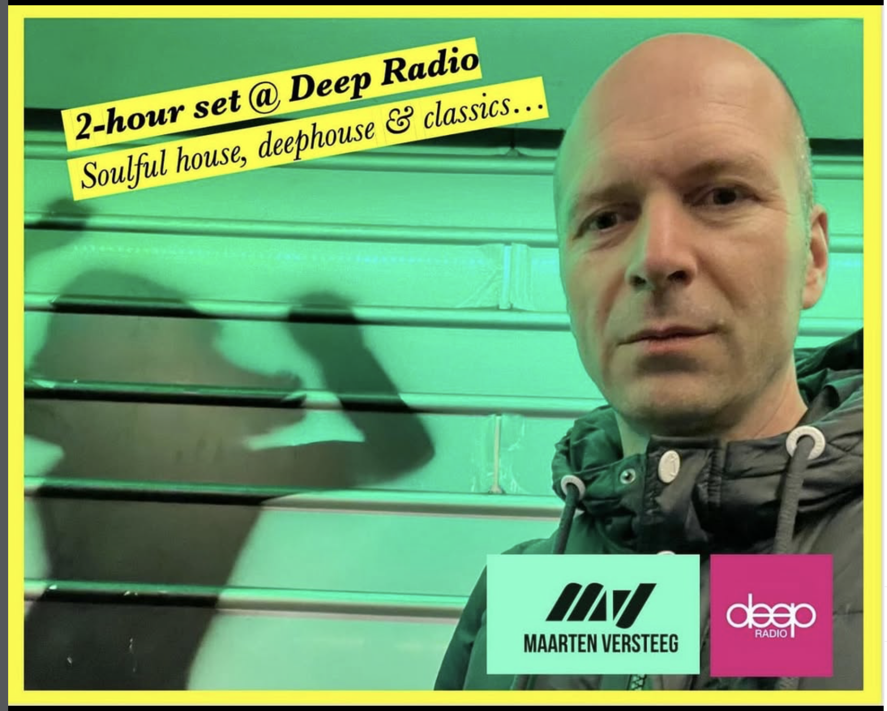
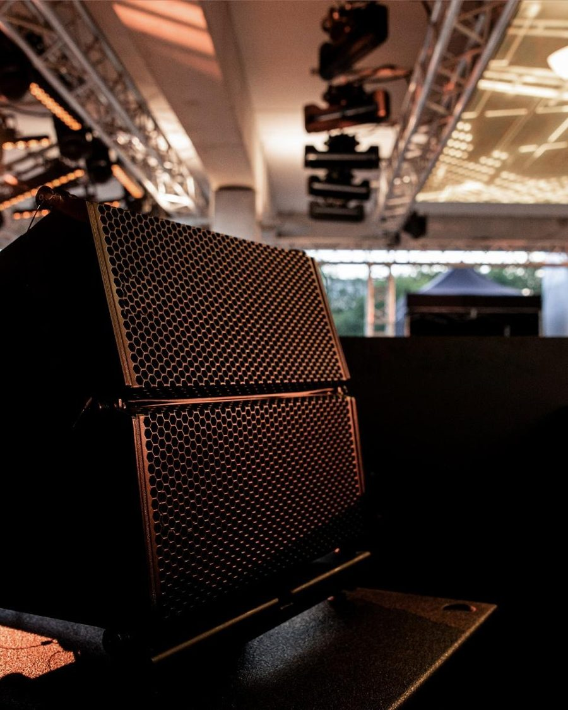
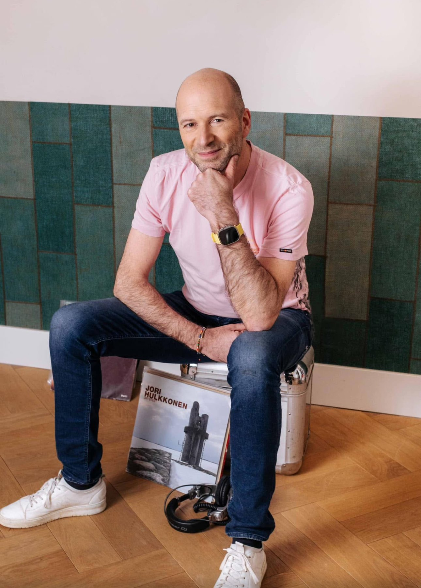
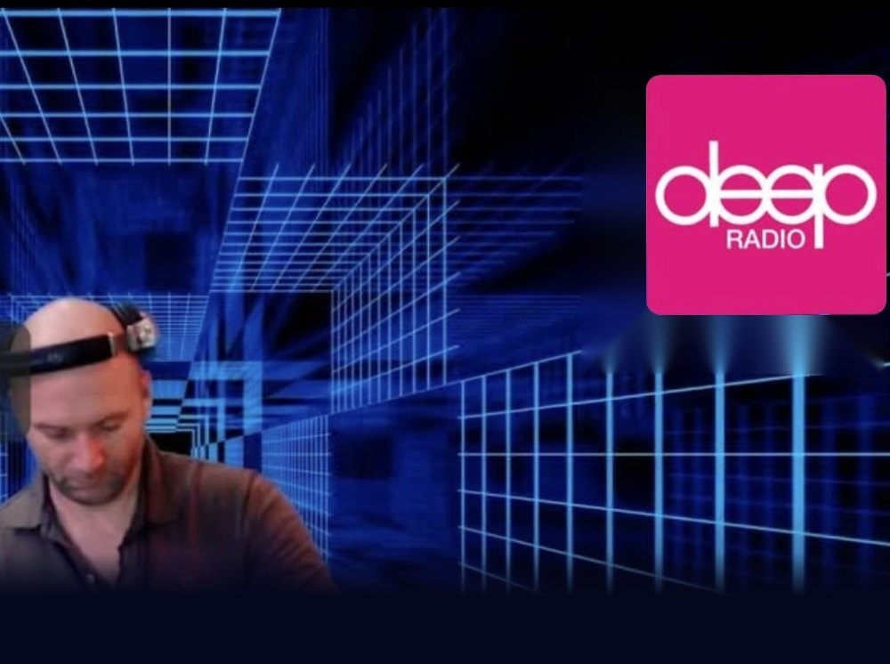

Hear the difference
Transformeer een locatie in een dansvloer, een zakelijk event in een merkbelevenis, een dj-set in een muzikale reis.
Van intieme tot midsize events
van 50 tot 1.500 personen
Wij werken graag samen met…
 Eventmanagers en communicatieprofessionalsDie namens hun werkgever of opdrachtgever een netwerkdag, seminar of zakelijke borrel organiseren.Wat we voor je doen →
Eventmanagers en communicatieprofessionalsDie namens hun werkgever of opdrachtgever een netwerkdag, seminar of zakelijke borrel organiseren.Wat we voor je doen → Merken, creatieven en bureausDie een merkactivatie, productlancering, collectiepresentatie, modeshow of in-store event organiseren.Wat we voor je doen →
Merken, creatieven en bureausDie een merkactivatie, productlancering, collectiepresentatie, modeshow of in-store event organiseren.Wat we voor je doen → Organisatoren van (dance) eventsPromotors of andere ondernemers die een feest met dj's en artiesten organiseren.Wat we voor je doen →
Organisatoren van (dance) eventsPromotors of andere ondernemers die een feest met dj's en artiesten organiseren.Wat we voor je doen →
Eigenaren en exploitanten van eventlocatiesDie steeds een andere klant moeten servicen: vandaag een modeshow, morgen een seminar, overmorgen een bedrijfsfeest met dj.Wat we voor je doen →Cases
Wat we voor hen doen
 Brand activation
Brand activationLancering nieuwe sneakercollectie, daarna een feest →
Brand activationmodemerkproductlicht en lichtshow

Dance eventPop-up feest tijdens ADE, in een skatehal →
Franse DJ Rivo & friendsnauwelijks soundchecklocatie ombouw Zakelijk event
Zakelijk eventSeminar voor 500 gasten, daarna cocktail hour →
Netwerkeventtop 5 gemeente Dance event
Dance eventLive percussie tijdens ADE, in dramatisch rood →
MelandruRaw Drums
Zakelijk eventEen tuinfeest voor een ondernemersnetwerk →
5 jaar CreativeGroundsdj en saxofonistgericht geluid
DjDj-sets met 40 jaar elektronische muziek →
Cocktailbars en corporate eventsvia Architects in Music
DjRadioshow van twee uur op Deep Radio →
Radiomixessoulful en deep house
AdviesSysteemadvies voor een verhuurbedrijf →
Een systeem dat meegroeitinkoop tegen scherpe prijs Dance event
Dance eventPrivéfeest voor 150 gasten, met meerdere dj's →
Gewone zaal, kleurrijke dansvloerAlle casesMet hoogwaardige producten en diverse diensten
Kies een categorie GeluidRCF KX en Brooklyn Audio
GeluidRCF KX en Brooklyn Audio Dj-gearCDJ-3000X, V10, Euphonia, WARM2 en booth
Dj-gearCDJ-3000X, V10, Euphonia, WARM2 en booth Sfeerlichtaccu-washlights, theaterspots, hazer
Sfeerlichtaccu-washlights, theaterspots, hazer Dansvloerlichthybride moving heads en lichtshows
Dansvloerlichthybride moving heads en lichtshows 90's vintage lichtAstrodisco en Golden Scan
90's vintage lichtAstrodisco en Golden Scan Dj's en artiestenvocalist, saxofonist, percussionist
Dj's en artiestenvocalist, saxofonist, percussionist Coffee cutsplaylists of een live dj voor je koffiebar of bar
Coffee cutsplaylists of een live dj voor je koffiebar of bar Aankoopadvies licht en geluidmerkonafhankelijk, voor venues
Aankoopadvies licht en geluidmerkonafhankelijk, voor venues
GeluidRCF KX en Brooklyn AudioDj-gearCDJ-3000X, V10, Euphonia, WARM2 en boothDansvloerlichthybride moving heads en lichtshows90's vintage lichtAstrodisco en Golden ScanDj's en artiestenvocalist, saxofonist, percussionistCoffee cutsplaylists of een live dj voor je koffiebar of bar
Communicatieadviesboodschap, speeches, uitnodigingen, videoAankoopadvies licht en geluidmerkonafhankelijk, voor venues


Ondertussen bij ons en ons netwerk
Lees het bericht→EventsMelandru speelt ‘Raw Drums’ in dramatisch rood

Lees het bericht→EventsMuzikale reis van 2 uur op Deep Radio
 Lees het bericht→Productnieuws
Lees het bericht→ProductnieuwsNieuw in de booth: RCF KXM 25-A floormonitor
 Lees het bericht→Productnieuws
Lees het bericht→ProductnieuwsNieuw in huis: twee sets RCF SUB 808-AS met KX 515-A
 Lees het bericht→Backstage stories
Lees het bericht→Backstage storiesWat kost audiovisuele ondersteuning van een evenement eigenlijk?
Nieuws en achtergronden
Over HEAR
Als dj, corporate communicatiespecialist én founder van HEAR verbind ik de corporate evenementenwereld met techniek en muziek.